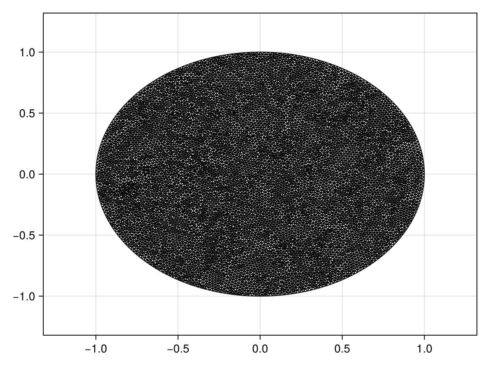
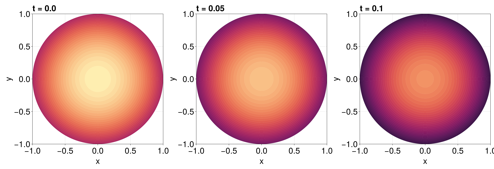

Reaction-Diffusion Equation with a Time-dependent Dirichlet Boundary Condition on a Disk
In this tutorial, we consider a reaction-diffusion equation on a disk with a boundary condition of the form $\mathrm du/\mathrm dt = u$:
\[\begin{equation*} \begin{aligned} \pdv{u(r, \theta, t)}{t} &= \div[u\grad u] + u(1-u) & 0<r<1,\,0<\theta<2\pi,\\[6pt] \dv{u(1, \theta, t)}{t} &= u(1,\theta,t) & 0<\theta<2\pi,\,t>0,\\[6pt] u(r,\theta,0) &= \sqrt{I_0(\sqrt{2}r)} & 0<r<1,\,0<\theta<2\pi, \end{aligned} \end{equation*}\]
where $I_0$ is the modified Bessel function of the first kind of order zero. For this problem the diffusion function is $D(\vb x, t, u) = u$ and the source function is $R(\vb x, t, u) = u(1-u)$, or equivalently the force function is
\[\vb q(\vb x, t, \alpha,\beta,\gamma) = \left(-\alpha(\alpha x + \beta y + \gamma), -\beta(\alpha x + \beta y + \gamma)\right)^{\mkern-1.5mu\mathsf{T}}.\]
As usual, we start by generating the mesh.
using FiniteVolumeMethod, DelaunayTriangulation, ElasticArrays
r = 1.0
circle = CircularArc((0.0, r), (0.0, r), (0.0, 0.0))
points = NTuple{2, Float64}[]
boundary_nodes = [circle]
tri = triangulate(points; boundary_nodes)
A = get_area(tri)
refine!(tri; max_area = 1e-4A)
mesh = FVMGeometry(tri)FVMGeometry with 8896 control volumes, 17534 triangles, and 26429 edgesusing CairoMakie
triplot(tri)
Now we define the boundary conditions and the PDE.
using Bessels
BCs = BoundaryConditions(mesh, (x, y, t, u, p) -> u, Dudt)BoundaryConditions with 1 boundary condition with type Dudtf = (x, y) -> sqrt(besseli(0.0, sqrt(2) * sqrt(x^2 + y^2)))
D = (x, y, t, u, p) -> u
R = (x, y, t, u, p) -> u * (1 - u)
initial_condition = [f(x, y) for (x, y) in DelaunayTriangulation.each_point(tri)]
final_time = 0.10
prob = FVMProblem(mesh, BCs;
diffusion_function = D,
source_function = R,
final_time,
initial_condition)FVMProblem with 8896 nodes and time span (0.0, 0.1)We can now solve.
using OrdinaryDiffEq, LinearSolve
alg = FBDF(linsolve = UMFPACKFactorization(), autodiff = AutoFiniteDiff())
sol = solve(prob, alg, saveat = 0.01)retcode: Success
Interpolation: 1st order linear
t: 11-element Vector{Float64}:
0.0
0.01
0.02
0.03
0.04
0.05
0.06
0.07
0.08
0.09
0.1
u: 11-element Vector{Vector{Float64}}:
[1.2514323512504983, 1.2514323512504983, 1.2514323512504983, 1.2514323512504983, 1.2514323512504983, 1.2514323512504983, 1.2514323512504983, 1.2514323512504983, 1.0, 1.0732643239064652 … 1.1012760739828538, 1.1813093418540053, 1.180028494001382, 1.161278956691806, 1.0943123146963916, 1.0176784601365922, 1.0016901072141244, 1.1182429325685972, 1.1141532672993537, 1.0473463335553164]
[1.2640096939969085, 1.2640096939969085, 1.2640096939969085, 1.2640096939969085, 1.2640096939969085, 1.2640096939969085, 1.2640096939969085, 1.2640096939969085, 1.0100569264048693, 1.084037357205795 … 1.1123331025860739, 1.1931766533286934, 1.191897656581802, 1.1729547360524288, 1.1053169661765478, 1.0279002577898175, 1.0117593102381308, 1.1294842839438124, 1.1253521674525722, 1.057884892295352]
[1.276714215106112, 1.276714215106112, 1.276714215106112, 1.276714215106112, 1.276714215106112, 1.276714215106112, 1.276714215106112, 1.276714215106112, 1.0202099470283363, 1.0949332522881101 … 1.12351356673942, 1.2051723635170073, 1.203880468856902, 1.1847472116494655, 1.1164294992153783, 1.0382325917750375, 1.0219310663392915, 1.1408391035351026, 1.1366655884351664, 1.0685204177031096]
[1.2895472650561077, 1.2895472650561077, 1.2895472650561077, 1.2895472650561077, 1.2895472650561077, 1.2895472650561077, 1.2895472650561077, 1.2895472650561077, 1.0304647326682717, 1.105941599829862 … 1.1348088614491811, 1.2172876324635444, 1.2159824078535324, 1.1966568181724768, 1.127651811739582, 1.0486693737127537, 1.0322027992670082, 1.1523070640077353, 1.1480916189794954, 1.0792602406869596]
[1.3025086432800492, 1.3025086432800492, 1.3025086432800492, 1.3025086432800492, 1.3025086432800492, 1.3025086432800492, 1.3025086432800492, 1.3025086432800492, 1.040821619919105, 1.11706076655603 … 1.1462190330001176, 1.2295224266635925, 1.2282036437069344, 1.2086834948435465, 1.1389845747523084, 1.059209976393304, 1.0425760809594469, 1.1638895842060557, 1.1596319747927522, 1.0901062790089866]
[1.3156008524561678, 1.3156008524561678, 1.3156008524561678, 1.3156008524561678, 1.3156008524561678, 1.3156008524561678, 1.3156008524561678, 1.3156008524561678, 1.051283584885625, 1.1282908678989785 … 1.1577446602430042, 1.2418803292345948, 1.240547992652189, 1.2208311802803307, 1.150432189707363, 1.0698565893646879, 1.0530555433465967, 1.1755903127005367, 1.171290377354209, 1.1010635653885028]
[1.328825118405213, 1.328825118405213, 1.328825118405213, 1.328825118405213, 1.328825118405213, 1.328825118405213, 1.328825118405213, 1.328825118405213, 1.061852085274603, 1.139631960397891 … 1.1693860267010197, 1.2543630952002904, 1.2530173238948896, 1.2331018036318455, 1.161996812452564, 1.0806102850753476, 1.0636434551643348, 1.187411036574045, 1.1830686494577252, 1.1121345648694296]
[1.342182523587295, 1.342182523587295, 1.342182523587295, 1.342182523587295, 1.342182523587295, 1.342182523587295, 1.342182523587295, 1.342182523587295, 1.0725284083129296, 1.1510840939796536 … 1.1811433827390991, 1.2669722743331016, 1.26561328803566, 1.2454970684317095, 1.1736803467077395, 1.0914720105500915, 1.074341819818206, 1.1993533339087912, 1.1949684007200765, 1.1233214542069876]
[1.3556743390501826, 1.3556743390501826, 1.3556743390501826, 1.3556743390501826, 1.3556743390501826, 1.3556743390501826, 1.3556743390501826, 1.3556743390501826, 1.0833140654898985, 1.1626473272694822 … 1.193017022341095, 1.2797096864088882, 1.2783378232449851, 1.2580189750054613, 1.18548502786135, 1.1024428778056639, 1.0851529897497671, 1.2114190577225934, 1.2069915211876396, 1.134626789393621]
[1.3693018358416436, 1.3693018358416436, 1.3693018358416436, 1.3693018358416436, 1.3693018358416436, 1.3693018358416436, 1.3693018358416436, 1.3693018358416436, 1.0942105682948022, 1.1743217188925916 … 1.2050072394908582, 1.292577151203508, 1.2911928676933495, 1.2706695236786385, 1.1974130913018537, 1.1135239988588086, 1.0960793174005727, 1.223610061033268, 1.2191399009067911, 1.146053126421774]
[1.383065516357538, 1.383065516357538, 1.383065516357538, 1.383065516357538, 1.383065516357538, 1.383065516357538, 1.383065516357538, 1.383065516357538, 1.1052026796106447, 1.18615656170503 … 1.2171200772270225, 1.305564075081017, 1.3041570033093355, 1.2834375445130302, 1.2094306244454265, 1.1247284074139279, 1.107066410066237, 1.2358830948055932, 1.2313618516946558, 1.15753270554726]fig = Figure(fontsize = 38)
for (i, j) in zip(1:3, (1, 6, 11))
ax = Axis(fig[1, i], width = 600, height = 600,
xlabel = "x", ylabel = "y",
title = "t = $(sol.t[j])",
titlealign = :left)
tricontourf!(ax, tri, sol.u[j], levels = 1:0.01:1.4, colormap = :matter)
tightlimits!(ax)
end
resize_to_layout!(fig)
fig
Just the code
An uncommented version of this example is given below. You can view the source code for this file here.
using FiniteVolumeMethod, DelaunayTriangulation, ElasticArrays
r = 1.0
circle = CircularArc((0.0, r), (0.0, r), (0.0, 0.0))
points = NTuple{2, Float64}[]
boundary_nodes = [circle]
tri = triangulate(points; boundary_nodes)
A = get_area(tri)
refine!(tri; max_area = 1e-4A)
mesh = FVMGeometry(tri)
using CairoMakie
triplot(tri)
using Bessels
BCs = BoundaryConditions(mesh, (x, y, t, u, p) -> u, Dudt)
f = (x, y) -> sqrt(besseli(0.0, sqrt(2) * sqrt(x^2 + y^2)))
D = (x, y, t, u, p) -> u
R = (x, y, t, u, p) -> u * (1 - u)
initial_condition = [f(x, y) for (x, y) in DelaunayTriangulation.each_point(tri)]
final_time = 0.10
prob = FVMProblem(mesh, BCs;
diffusion_function = D,
source_function = R,
final_time,
initial_condition)
using OrdinaryDiffEq, LinearSolve
alg = FBDF(linsolve = UMFPACKFactorization(), autodiff = AutoFiniteDiff())
sol = solve(prob, alg, saveat = 0.01)
fig = Figure(fontsize = 38)
for (i, j) in zip(1:3, (1, 6, 11))
ax = Axis(fig[1, i], width = 600, height = 600,
xlabel = "x", ylabel = "y",
title = "t = $(sol.t[j])",
titlealign = :left)
tricontourf!(ax, tri, sol.u[j], levels = 1:0.01:1.4, colormap = :matter)
tightlimits!(ax)
end
resize_to_layout!(fig)
figThis page was generated using Literate.jl.